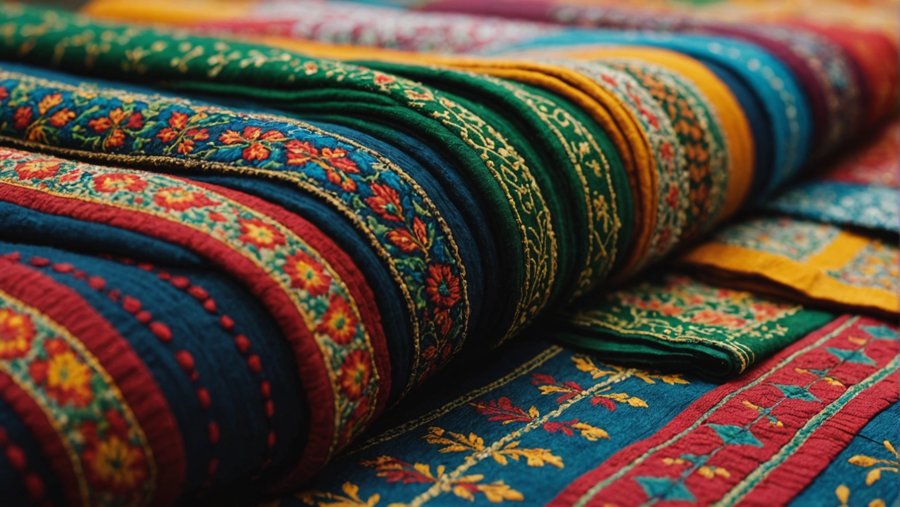

Unveiling the Timeless Elegance: TrendAura's Winter Shalwar Kameez Collection
Winter is a season that calls for cozy, yet elegant attire. What better way to embrace the charm of winter than by adorning yourself in the exquisite shalwar kameez styles from TrendAura? As the frosty air sets in, it's time to elevate your winter wardrobe with these must-have pieces that exude sophistication and grace.
Elevate Your Winter Wardrobe
TrendAura's Winter Shalwar Kameez Collection is a fusion of traditional aesthetics and contemporary flair. Each ensemble is meticulously crafted to cater to the modern fashionista who appreciates the beauty of cultural heritage woven into every stitch. From rich fabrics to intricate embellishments, these pieces are designed to make a statement while keeping you warm and comfortable during the chilly winter days.
Timeless Elegance in Every Detail
The collection features a wide range of styles that cater to diverse tastes. Whether you prefer classic motifs or contemporary patterns, TrendAura has something for everyone. The lush fabrics drape elegantly, enhancing your silhouette and adding a touch of regal charm to your look. Each outfit tells a unique story, reflecting the timeless elegance that is synonymous with shalwar kameez.

Embrace Tradition with a Modern Twist
Embrace the beauty of tradition with a modern twist. TrendAura's Winter Shalwar Kameez Collection strikes the perfect balance between heritage and innovation. The intricate embroidery and beadwork showcase the craftsmanship of skilled artisans, while the contemporary silhouettes keep the designs fresh and relevant. It's a harmonious blend of old and new, creating a style that is truly timeless.
A Wardrobe Essential for the Winter Season
As the temperatures drop, it's essential to have pieces in your wardrobe that not only keep you warm but also make you feel fabulous. TrendAura's shalwar kameez styles are a must-have for the winter season. Whether you're attending a festive gathering or simply want to add a touch of elegance to your everyday look, these outfits are the perfect choice.
Elevate Your Style with TrendAura
With TrendAura's Winter Shalwar Kameez Collection, you can elevate your style to new heights. Each piece in the collection is a work of art, meticulously designed to bring out your inner grace and sophistication. Embrace the season in style and make a lasting impression with these exquisite ensembles that capture the essence of timeless elegance.
"Fashion is what you buy; style is what you do with it." – Anonymous
So this winter, step out in style with TrendAura's must-have shalwar kameez styles. Elevate your winter wardrobe with pieces that are as enchanting as the season itself. Embrace tradition, celebrate innovation, and radiate elegance with TrendAura's Winter Shalwar Kameez Collection.